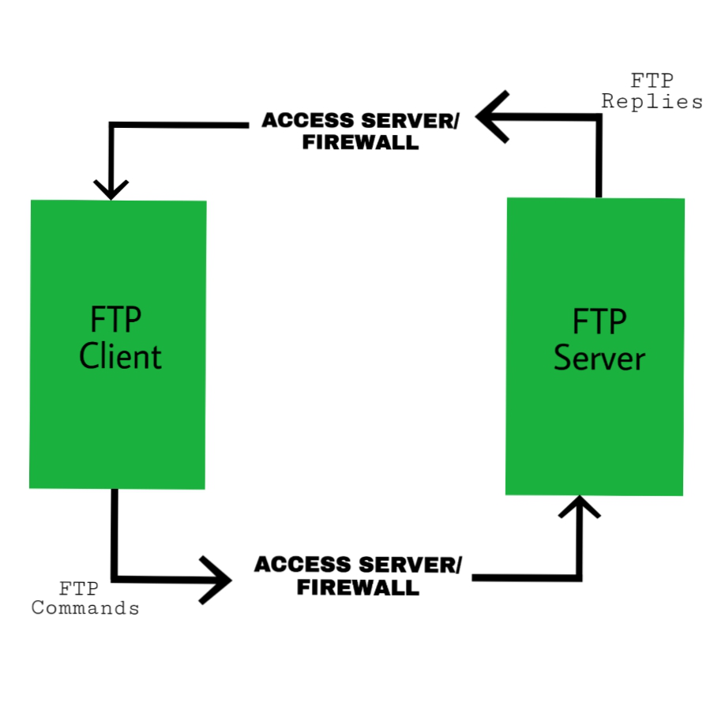

File Transfer Protocol (FTP) is a standard network protocol used to transfer files between a client and a server over the Internet or a network. FTP allows users to upload, download, and manage files on remote servers.
It is important to note that FTP is one of the many services of the Internet, alongside others like the World Wide Web and email.
